All ESCO Categories
Industrial / Applied Sciences
Laboratory and containment solutions for industry, research and applied sciences.

Products
Search the catalogue or choose an application.
63 of 63 products

Agriculture
Centrifuge

Agriculture
Class II Biological Safety Cabinet

Agriculture
Laminar Flow Cabinet

Agriculture
CO₂ Incubators

Agriculture
Orbital Shaker

Agriculture
Ducted Fume Hood

Agriculture
Ductless Fume Hood

Agriculture
Automated Nucleic Acid Extraction System

Agriculture
Microplate Shaker/Incubator

Agriculture
PCR Cabinet

Agriculture
PCR Thermal Cycler

Agriculture
Bioreactor
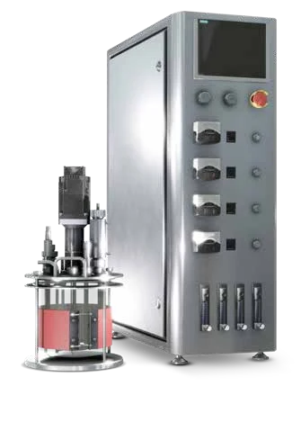
Agriculture
Fermenter
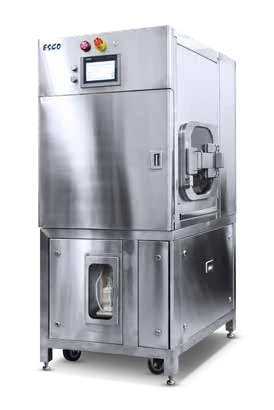
Agriculture
Single-Use Bioreactors
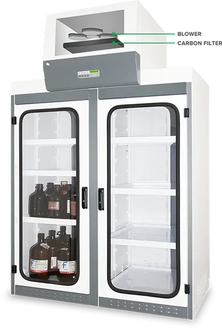
Agriculture
Filtered Storage Cabinet

Agriculture
Lab Freezer

Agriculture
Lab Refrigerator

Agriculture
Ultra-low Temperature Freezer

Alternative Proteins
Class I Biological Safety Cabinet

Alternative Proteins
Cytotoxic Safety Cabinet
Alternative Proteins
Bioreactors (Stirred-tank)

Alternative Proteins
Isolation Containment
Alternative Proteins
Refrigerators

Animal Science and Veterinary
Bedding Disposal Animal Containment Workstation

Animal Science and Veterinary
Dual Access Animal Containment Workstation

Animal Science and Veterinary
Universal Animal Research Workstation
Animal Science and Veterinary
Biological Safety Cabinet
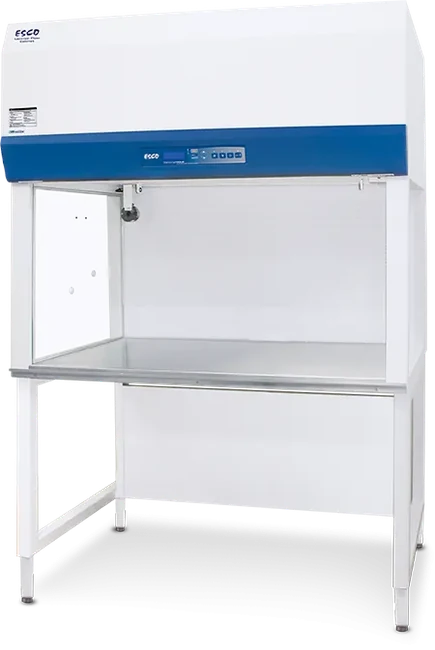
Animal Science and Veterinary
Horizontal Laminar Flow Cabinet
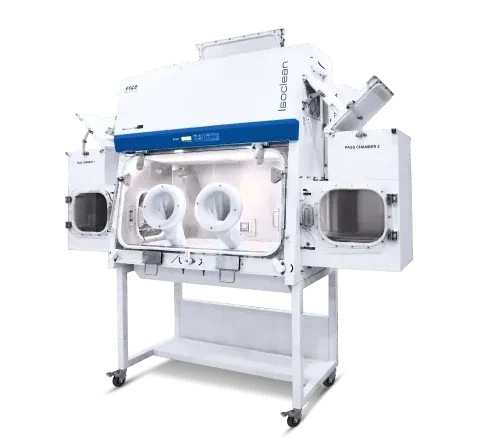
Animal Science and Veterinary
Isolators
Animal Science and Veterinary
Laboratory Freezer
Animal Science and Veterinary
Laboratory Refrigerator
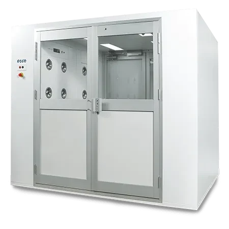
Automotive
Air Shower
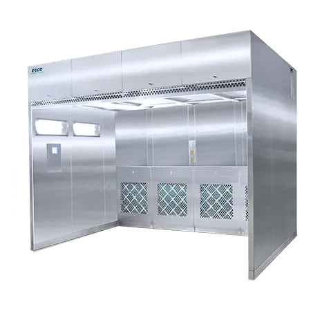
Automotive
Downflow Booth

Automotive
Laminar Airflow

Automotive
Laminar Flow Horizontal/Vertical Trolley
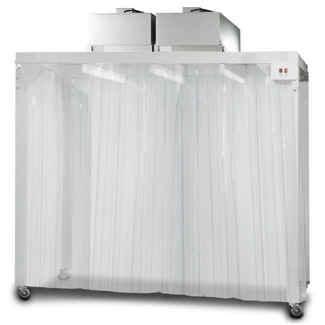
Automotive
Soft-wall Cleanroom
Cellular Agriculture
Cytoculture Cytotoxic Safety Cabinet

Cellular Agriculture
Harvesting Systems
Cellular Agriculture
Freezers
Cellular Agriculture
Ultra-low Freezers

Cosmetic/Cosmeceutical
Class III Biological Safety Cabinet
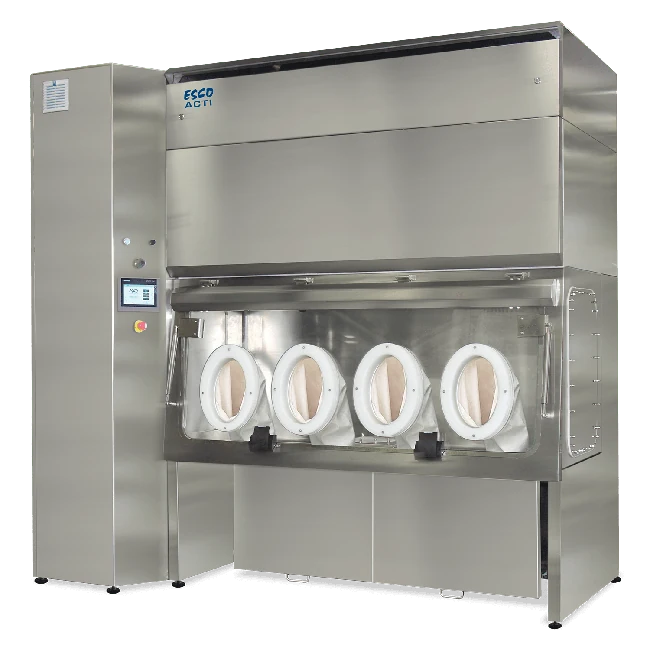
Cosmetic/Cosmeceutical
Aseptic Containment Isolator

Cosmetic/Cosmeceutical
Ceiling Laminar Airflow Unit
Cosmetic/Cosmeceutical
Cleanroom Air Shower
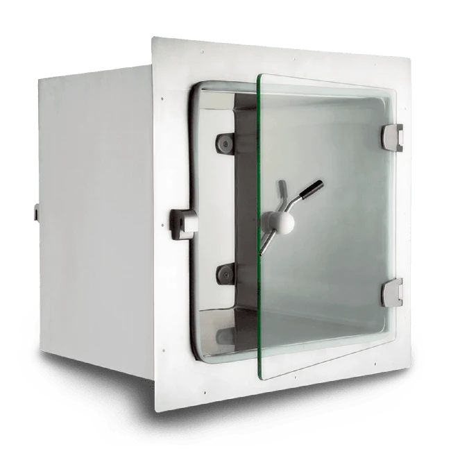
Cosmetic/Cosmeceutical
Cleanroom Transfer Hatch

Cosmetic/Cosmeceutical
Compounding Isolator
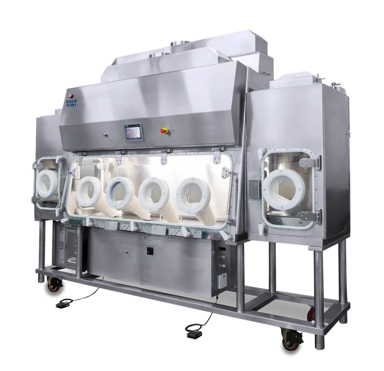
Cosmetic/Cosmeceutical
Containment Barrier Isolator
Cosmetic/Cosmeceutical
General Processing Platform Isolator
Cosmetic/Cosmeceutical
Laminar Flow Horizontal Trolley

Cosmetic/Cosmeceutical
Ventilated Balance Enclosure
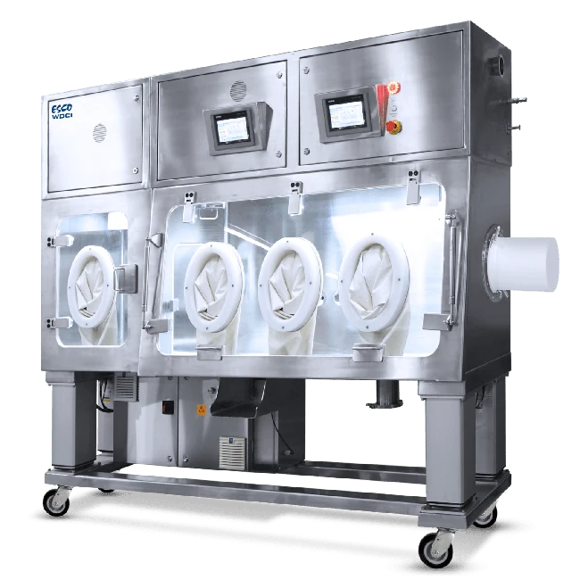
Cosmetic/Cosmeceutical
Weighing and Dispensing Containment Isolator

Electronics
Laminar Flow Straddle Unit
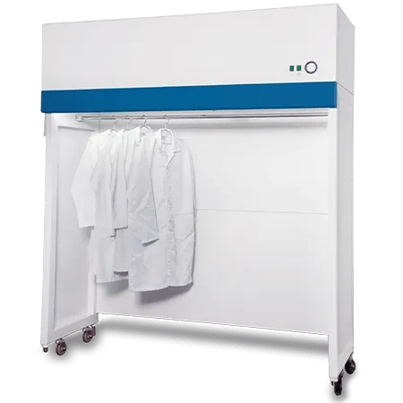
Electronics
Garment Storage Cabinet
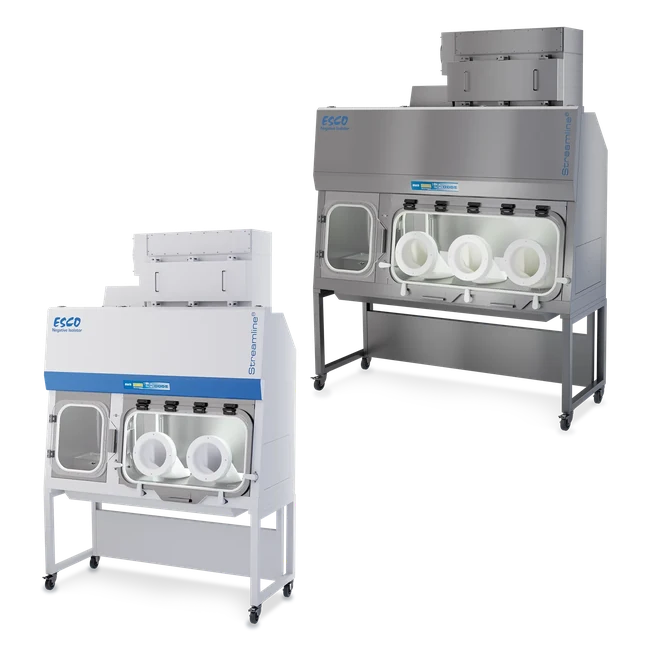
Food and Beverage
Containment Isolator

Medical Device Assembly
Pass Through
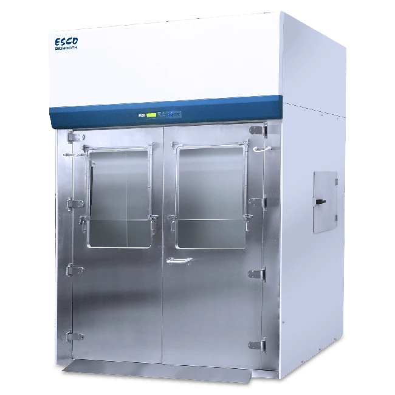
Pharmaceutical
Class II Bio-Containment Enclosure
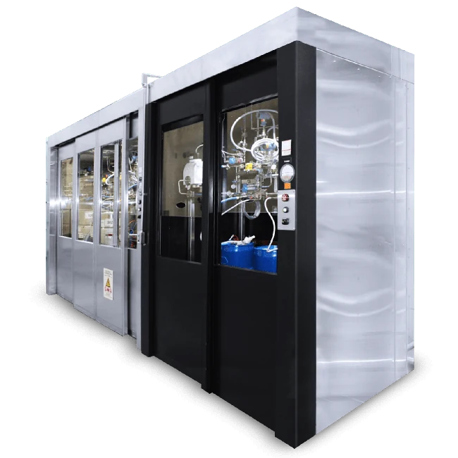
Pharmaceutical
Glassware Hood
Pharmaceutical
Isolator
Pharmaceutical
Pass Box
Pharmaceutical
Sputum Collection Booth

Pharmaceutical
Weighing and Dispensing Booth
Pharmaceutical
Bioreactors
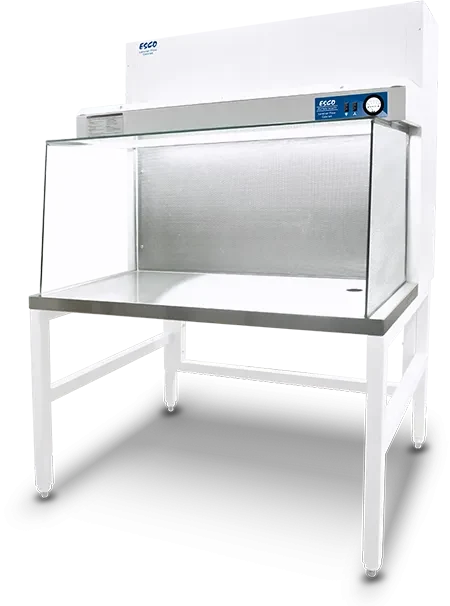
Plant Tissue Culture
Horizontal Laminar Flow Cabinet (for plant tissue culture)
No matching products
Try another search or clear the filters.